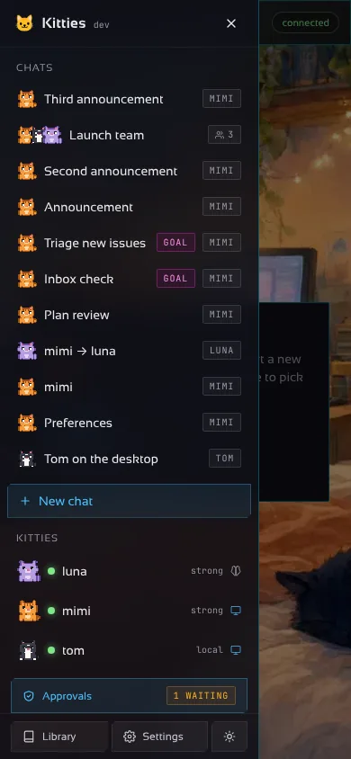
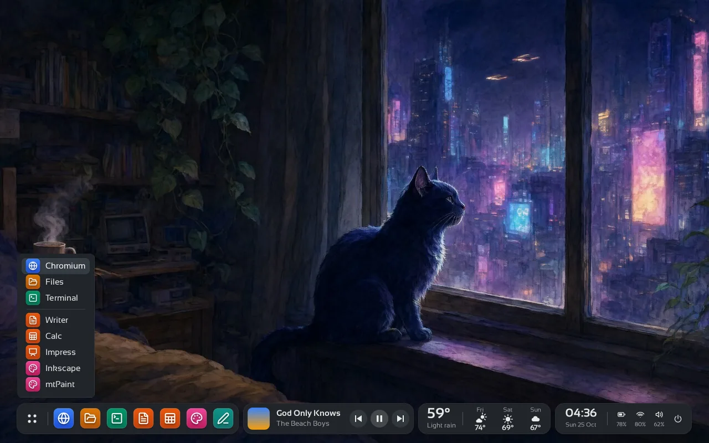
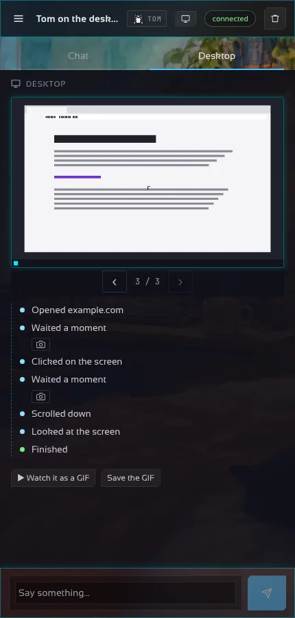

Un escritorio real por kitty
Pídele abrir un sitio o llenar un formulario. Mira una captura tras cada acción y el chat muestra cada paso. Obsérvala en vivo o toma el control para una contraseña o un captcha.
Software libre · Solo la biblioteca estándar de Go
Kitties ejecuta muchos bots autónomos a la vez. Cada kitty tiene un alma que tú moldeas, un cerebro de cualquier proveedor y un cuerpo: su propio escritorio aislado con navegador y herramientas. Trabaja mientras lo miras — o mientras duermes.
La demo no necesita clave de API ni Docker.

La mayoría de asistentes se quedan en el consejo. Una kitty abre el sitio, llena el formulario, lee el resultado y te informa — dentro de un contenedor, nunca en tu equipo.
| Chatbot | Kitties | |
|---|---|---|
| Trabaja en apps reales | Solo texto | Navegador, editor, archivos, ofimática |
| Funciona sin ti | No | Metas, horarios, eventos |
| Seguro darle acceso | Tu equipo | Escritorio Docker aislado |
| Tú eliges el modelo | Un proveedor | Cualquiera, por kitty |
| Mantienes el control | Esperanza | Aprobaciones, límites, toma de control |
Hecho para la autonomía, diseñado para que sigas al mando.
Pídele abrir un sitio o llenar un formulario. Mira una captura tras cada acción y el chat muestra cada paso. Obsérvala en vivo o toma el control para una contraseña o un captcha.

Metas programadas o por eventos, presupuesto diario, reintentos, una kitty de respaldo, delegación entre kitties y un diario de todo.

Memoria persistente, pulgares que enseñan tus criterios, límites de acción y aprobaciones que se relajan a medida que gana confianza.

Slack, GitHub, Gmail, Google Workspace, Microsoft 365, Spotify, Stripe, Home Assistant y más — con inicio de sesión donde el servicio lo permite.

Abre un hilo y deja que varias kitties trabajen juntas, cada una con su personalidad y su modelo.

CLI, app de escritorio, app Android y modo servidor con https. Las notificaciones llegan al móvil cuando una kitty necesita un sí.
Openbox con su propia barra — apps fijadas, un reproductor, el clima, un reloj — en tema oscuro con iconos Lucide y tipografía Sansation. Bonito a propósito.

En pantallas anchas el chat se divide en dos: las respuestas de la kitty a la izquierda; sus pasos y la última captura, en grande, a la derecha. En el móvil pasan a ser pestañas.


Una personalidad en un pequeño YAML. Tú la moldeas.
OpenAI, Anthropic, Gemini, Ollama, Groq, OpenRouter, DeepSeek, Qwen, Mistral, Copilot o cualquier servidor compatible.
Un contenedor Docker con escritorio sin pantalla, navegador y las herramientas habituales.
La app de escritorio trae su propio gateway y lo inicia si no hay uno corriendo: no necesitas instalar nada más.
x64. SmartScreen pregunta una vez: Más información y luego Ejecutar de todas formas.
App de escritorio (.zip)Apple silicon (Intel abajo). Abre la imagen de disco y arrastra Kitties a Aplicaciones.
App de escritorio (.dmg)x64 (arm64 abajo). Descomprime y ejecuta kitties-desktop.
App de escritorio (.zip)Android 7 o posterior. Permite instalar desde tu navegador y abre el archivo.
App Android (.apk)Todos los archivos están en la última versión con su SHA256SUMS. Primera apertura en macOS y Windows.
En un servidor Linux, un comando instala el gateway con un servicio systemd. Verificado con las sumas y la firma de la versión.
curl -fsSL https://raw.githubusercontent.com/madkoding/kitties/main/scripts/install.sh | sudo shgo install github.com/madkoding/kitties/cmd/kitties@latest
kitties -demo gateway # abre http://127.0.0.1:7488kitties init
export ANTHROPIC_API_KEY=...
make image
kitties gateway¿Prefieres una app? Descarga la app de escritorio, la CLI o la app Android.
No. Cada kitty trabaja dentro de su propio contenedor Docker o Podman con un escritorio sin pantalla.
Cualquiera de más de 11 proveedores, con clave de API o suscripción, elegido por kitty. Con Ollama todo queda local.
Nada. Kitties es software libre bajo GPL-3.0-or-later. Solo pagas a tu proveedor de modelos, y los presupuestos diarios lo limitan.
Siempre. Pon límites, exige aprobación para acciones de riesgo o toma el escritorio en vivo.
Libre, abierto y a pocos minutos de funcionar.
Obtener Kitties en GitHub